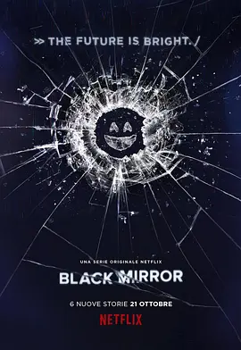

9.0
黑镜 第三季
Black Mirror Season 3
2016
英国
评分 9.0
导演:
欧文·哈里斯 / 乔·赖特 / 詹姆斯·瓦特金斯 / 雅各布·维尔布鲁根 / 詹姆斯·霍斯
演员:
古古·姆巴塔-劳 / 麦肯兹·戴维斯 / 布莱丝·达拉斯·霍华德 / 凯莉·麦克唐纳 / 杰罗姆·弗林
类型:
剧情,惊悚,科幻
剧情简介
在本季中，每一集都是独立的“小黑镜”镜像：在炫目的视觉下藏匿着人类最脆弱、最暴露的一面。社会评价体系、虚拟现实游戏、网络黑暗角落、战争机器……这些看似科幻的设定，其实都在逼近我们的现实。第一集《鼻子掠过 Nosedive》中，丽西生活在一个人人都可以通过社交评分决定你未来的世界。她镜头前的微笑明亮如浅粉色滤镜，镜头外却是步步惊心的尴尬与焦虑：一次礼貌的评论、一次车祸、一次评价失利，每一个数字都像一根针刺向自尊。她想重回“5.0”的巅峰，却发现那条路比她想象的更狰狞。第三集《闭嘴跳舞 Shut Up and Dance》则将科技惩罚推至极致。少年肯尼因一段被黑入摄像头的录像被迫走上一段涉及抢劫、谋杀、逃亡的地狱之旅。他的恐惧、羞耻与脆弱被无数屏幕捕捉并放大。结局像一面镜子，让你看清：被曝光的不只是罪，更是系统、是社会，甚至是你的凝视。 第四集《圣朱尼佩罗 San Junipero》反而带来希望之光。优雅沉稳的约克夏与光芒四射的凯莉在一座看似80年代风格的度假小镇里邂逅。两人经历疑惑、自控、释放，最终在数字永恒中选择共存。这是一部关于爱、身份和自由的故事——而关键是，两位主角是女性且互相相恋，呈现出主流剧集中少见的同性情感呈现。整体而言，这一季展现了从社会评价的外壳到性、权力、观众与被观众之间的关系，科技只是放大镜，人类的欲望、恐惧与救赎才是核心。